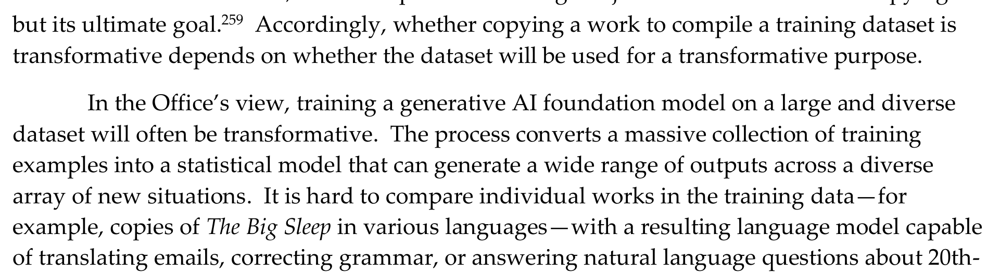
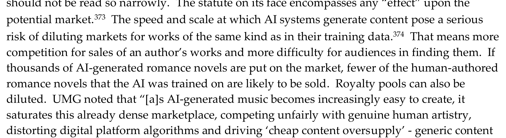
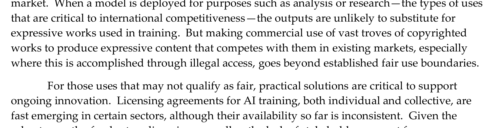

Page 06 of 11 — Supporting Argument II
Even the Referee
Splits the Stamp
U.S. Copyright Office — Copyright and Artificial Intelligence, Part 3: Generative AI Training
Strip out everyone with money riding on the answer and the strongest voice left is the referee. The Copyright Office built a report on more than 10,000 comments from the public, and it didn’t hand either side the win. First, the half the labs like to quote:
Exhibit 06-A · U.S. Copyright Office, p. 45“In the Office’s view, training a generative AI foundation model on a large and diverse dataset will often be transformative.”

Then one page later, the Office takes half of it back:
Exhibit 06-B · U.S. Copyright Office, p. 46“But transformativeness is a matter of degree, and how transformative or justified a use is will depend on the functionality of the model and how it is deployed.”
So instead of a blanket blessing, every model gets judged by its own training circumstances. The report doesn’t stop there, however:
Exhibit 06-C · U.S. Copyright Office, p. 65“If thousands of AI-generated romance novels are put on the market, fewer of the human-authored romance novels that the AI was trained on are likely to be sold.”

The Office’s conclusion doubles down on the same line Bartz drew. Commercial training on “vast troves of copyrighted works” that competes in their markets, “especially where this is accomplished through illegal access, goes beyond established fair use boundaries” (107).

The degree dial: the report’s spectrum as one instrument
The referee’s instrument
Three readings from one report, on one axis. Drag the needle — or focus the slider and use the arrow keys — to move between the record’s stops.
“In the Office’s view, training a generative AI foundation model on a large and diverse dataset will often be transformative.”
“But transformativeness is a matter of degree, and how transformative or justified a use is will depend on the functionality of the model and how it is deployed.”
“If thousands of AI-generated romance novels are put on the market, fewer of the human-authored romance novels that the AI was trained on are likely to be sold.”
“Labs may, copycats may not” is not a sustainable or long-term answer to the fair use argument. Degree gets measured by conduct at both ends: what was taken and how, what gets reproduced and into whose market. Those are the two things a court can actually audit.